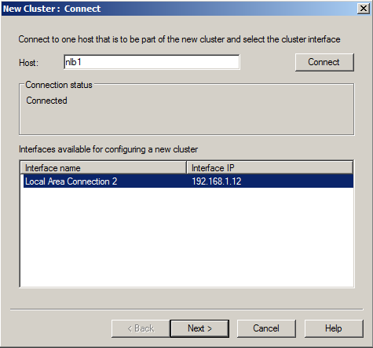
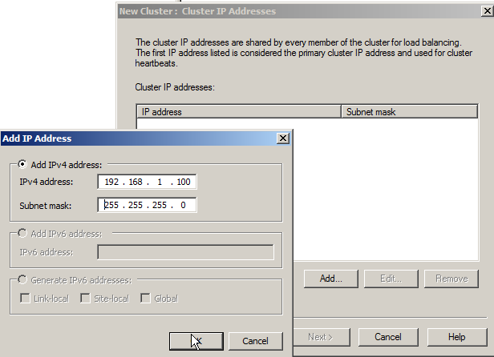
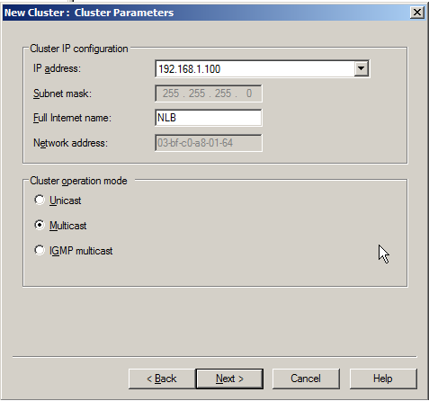
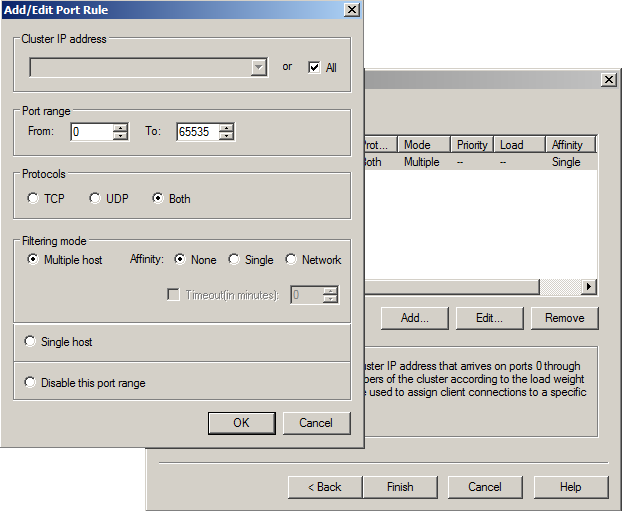

How to setup a load balancing cluster for Password Manager
Note: Load-balancing can be used for the frontend only. It is impossible to load-balance a single-server installation, because in this case there will be several copies of the Password Manager service running at the same time and we will not be able to share the internal database of Password Manager between them. Note: A load-balanced cluster can be built both with domain or non-domain members, however the best practice is to use domain members as cluster nodes. The instruction below refers to creating Load balancing cluster with domain members.
Note: Load-balancing can be used for the frontend only. It is impossible to load-balance a single-server installation, because in this case there will be several copies of the Password Manager service running at the same time and we will not be able to share the internal database of Password Manager between them. Note: A load-balanced cluster can be built both with domain or non-domain members, however the best practice is to use domain members as cluster nodes. The instruction below refers to creating Load balancing cluster with domain members.
- Enable the Network Load Balancing feature (only available in Windows 2008 R2 Datacenter and Enterprise)
- Run Server Manager snap-in
- In the left pane right-click to Features, select Add feature. A wizard opens.
- Enable the checkbox in front of Network Load Balancing , click Next, then click Install.
- On any server that has the Network Load Balancing feature installed, run Control panel " Administrative tools " Network Load Balancing Manager
- From the menu select Cluster " New
- In the Host field specify a name of a machine that is to be part of the new cluster, click Connect
- Select the network Interface that will be used to build a cluster, click Next

- In the New Cluster: Cluster IP addresses window click Add and specify the IP address and subnet mask that will be used to access the cluster. Click OK, then Next

- In the New cluster: Cluster Parameters window verify cluster IP, specify cluster internet name and cluster operational mode. Click Next.
Note: For servers with only one network interface set
Multicast.

- In the New cluster: Port rules window click Finish.
Note: By default all traffic (on all protocols and ports) is equally
divided between all cluster nodes. If you want to load-balance request on specific
protocol or port, in the New cluster: Port rules window highlight the rule and click
Modify.

- Right-click the newly created cluster in the left pane and select Add host to cluster and add more nodes if needed.
- Repeat steps 4-9 of this procedure for every server that is to be a cluster node.
- Install Web-Applications on every node per procedure 12 of the Administrators guide